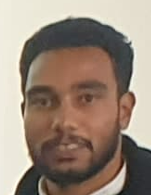
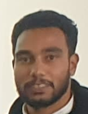

Our Story
Hi there! I'm Mohamed Ayman a passionate and dedicated web developer with a love for turning ideas into reality through code. My journey in the world of programming started with a curiosity for technology and a determination to create meaningful solutions.
Throughout my career, I have honed my skills in front-end and back-end development, embracing the ever-evolving landscape of web technologies. I find joy in crafting clean and efficient code that not only meets but exceeds the expectations of users and clients.
With a strong foundation in HTML, CSS, and JavaScript, coupled with experience in frameworks like React.js and Node.js, I bring a blend of creativity and technical expertise to every project. I am constantly seeking new challenges that push my boundaries and enhance my skill set.
Collaboration is at the core of my approach. I believe in open communication, teamwork, and a proactive mindset. Whether working independently or as part of a dynamic team, I thrive on delivering high-quality, scalable, and user-friendly solutions.
My commitment to lifelong learning ensures that I stay abreast of the latest industry trends and technologies. I am excited about the endless possibilities that the world of web development offers and look forward to contributing my skills to projects that make a positive impact.
Our Mission
At Abo Ayman Company, our mission is to leverage cutting-edge technologies to create innovative and impactful solutions that empower businesses and individuals. We are committed to delivering high-quality, scalable, and user-centric software that exceeds the expectations of our clients.
We believe in the transformative power of technology and its ability to simplify complex challenges. Our team of dedicated developers is driven by a passion for crafting elegant and efficient code that not only meets current needs but also anticipates future requirements.
Our mission extends beyond writing lines of code; it encompasses understanding the unique goals and visions of our clients. We collaborate closely with them to develop tailor-made solutions that address their specific needs and contribute to their success.
Continuous improvement is at the heart of our ethos. We strive to stay ahead of industry trends, adopting new technologies and methodologies to ensure that our solutions are always at the forefront of innovation. Our commitment to excellence and client satisfaction sets us apart in the competitive world of software development.
Join us on this journey as we embark on a mission to create digital experiences that make a difference. Together, let's build a future where technology enhances lives and transforms possibilities.
Our Team
We are a diverse team of professionals dedicated to achieving excellence in our respective fields. Meet the minds behind our success:
- Mohamed Ayman - CEO
- Fekry Abo Elafkar - CTO
- Mahmoud 7oda - CFO
 


Contact Us
Feel free to reach out to us for any inquiries or collaborations:
Email: AboAymanWa7edbs.77@company.com
Phone: +20 112 507-750-25